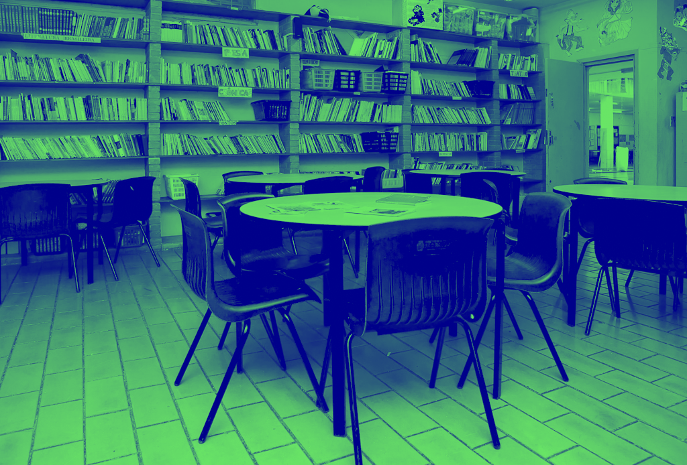
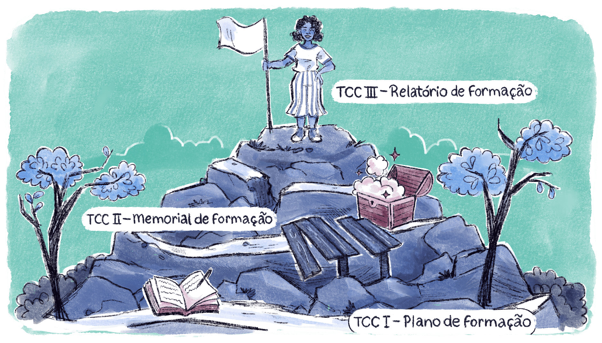

Trabalho de Conclusão de Curso – TCC III
INTRODUÇÃO
[...]
Valeu a pena? Tudo vale a pena
Se a alma não é pequena.
Quem quer passar além do Bojador
Tem que passar além da dor.
Deus ao mar o perigo e o abismo deu,
Mas nele é que espelhou o céu.
(Fernando Pessoa, Mensagem)
Caro estudante,
Chegando na reta final do curso, o TCC III é o momento de sistematização de todo o aprendizado adquirido até aqui, perpassando pelas discussões realizadas nas unidades temáticas e analisando a produção feita em outras etapas. Para isso, iremos elaborar um Relatório de Formação. À luz das discussões propostas durante o curso, a problemática já levantada por você nas demais etapas do TCC foi dando corpo à construção do seu percurso formativo a partir de uma situação real e socialmente relevante na Educação Profissional e Tecnológica (EPT). Nessa etapa, você deverá reunir todas as análises sobre essa problemática a fim de concluir sua trajetória nesse curso.
Relembrando, a produção do TCC se estrutura da seguinte forma:
- Primeiro momento – TCC I (15h): elaboração do Plano de Formação, a partir da definição de um tema de interesse.
- Segundo momento – TCC II (15h): continuidade do Memorial de Formação, a partir do inventário dos estudos realizados sobre o tema de interesse e da sistematização de suas anotações, sínteses e reflexões.
- Terceiro momento – TCC III (30h): elaboração do Relatório de Formação, a partir dos materiais já produzidos e das discussões propostas nas unidades temáticas.
No decorrer do capítulo, aprofundaremos como o Relatório de Formação deve ser elaborado.
Sejam bem-vindos ao Trabalho de Conclusão de Curso III.

Título: O percurso formativo realizado até aqui
Fonte: Prosa (2025a).